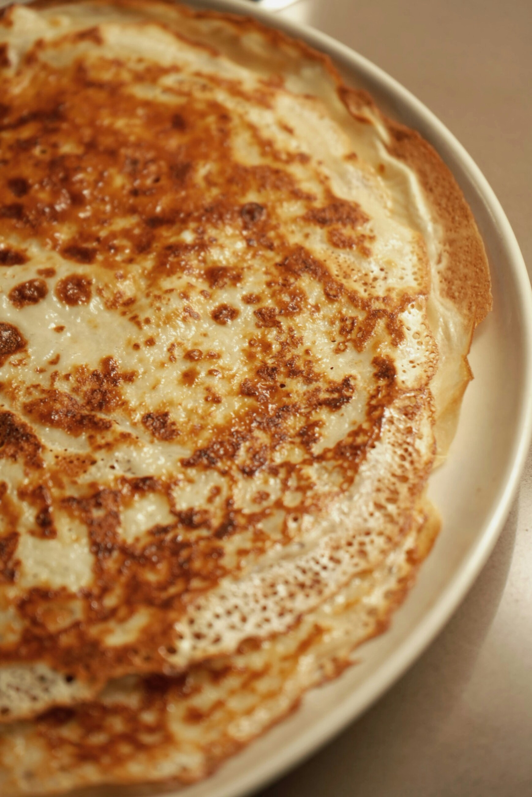

Pâte à crêpes

Description
la recherche de la meilleure recette de pâte à crêpes ? Vous êtes au bon endroit !
Cette préparation inratable vous garantit des crêpes légères, dorées et délicieusement parfumées.
Parfaite pour une Chandeleur réussie ou un brunch gourmand, elle séduira petits et grands avec son équilibre parfait entre moelleux et finesse.
Ingrédients pour 24 crêpes
- Farine 480g
- 5 cuillères à soupe de sucre
- 3 cuillères à soupe d'huile tournesol
- Beurre fondu 80g
- Rhum 8 cl
- 5 œufs
- Lait 100 cl
Étapes
- Mettre la farine dans une terrine et former un puits.
- Y déposer les oeufs entiers, le sucre, l'huile et le beurre fondu (laisser le refroidir un peu avant de l'incorporer aux autres ingrédients)
- Mélanger délicatement avec un fouet en ajoutant au fur et à mesure le lait. La pâte ainsi obtenue doit avoir une consistance d'un liquide légèrement épais.
- Parfumer de rhum.
- Faire chauffer une poêle antiadhésive et la huiler très légèrement à l'aide d'un papier Essuie-tout. Y verser une louche de pâte, la répartir dans la poêle puis attendre qu'elle soit cuite d'un côté avant de la retourner. Cuire ainsi toutes les crêpes à feu doux.
Home
Gaufres
Pain perdu